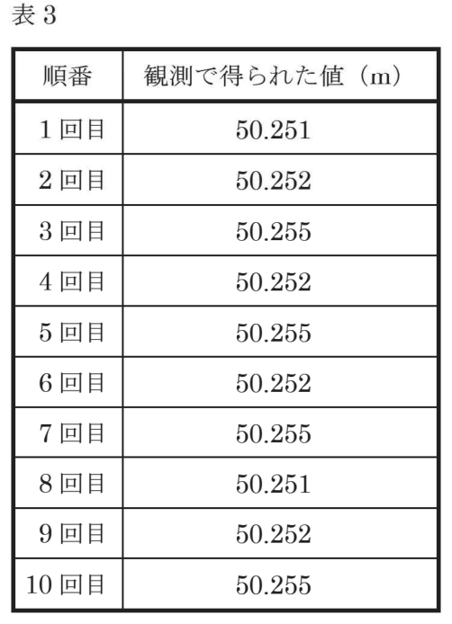
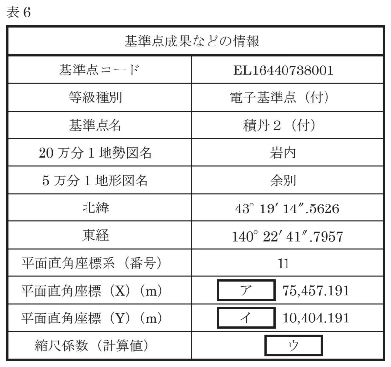
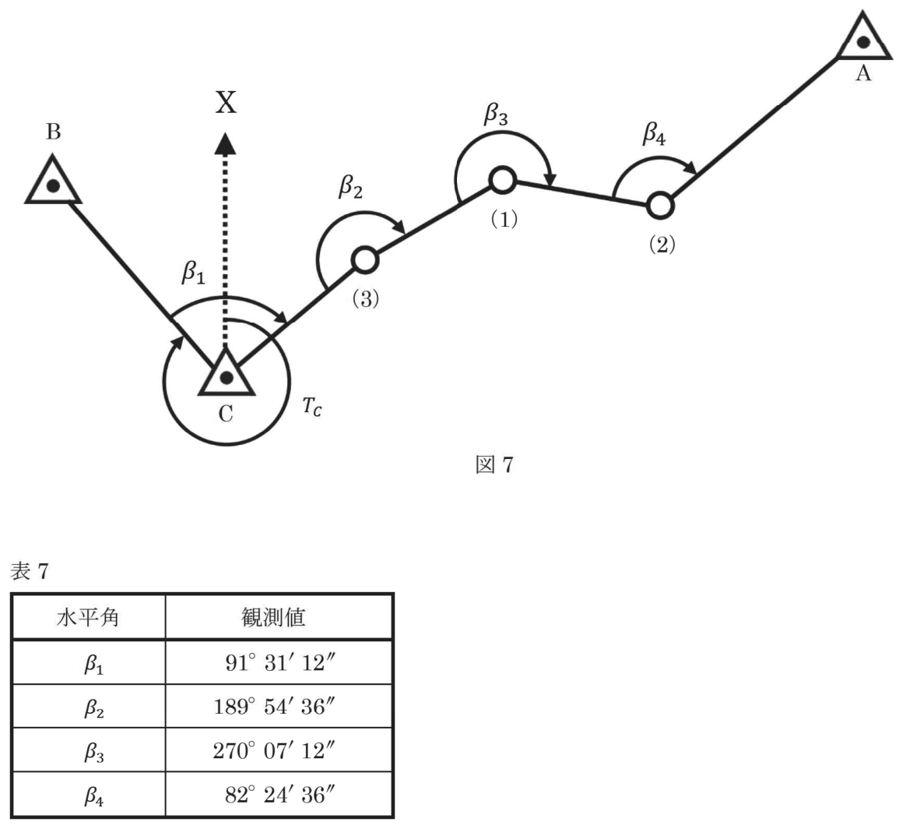
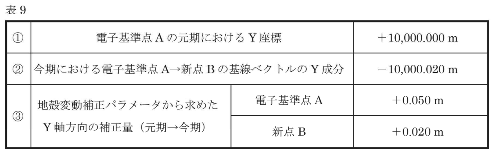
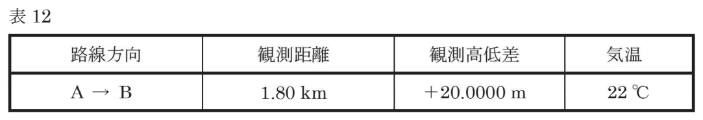
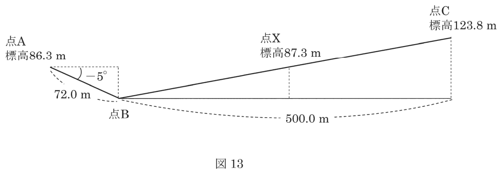
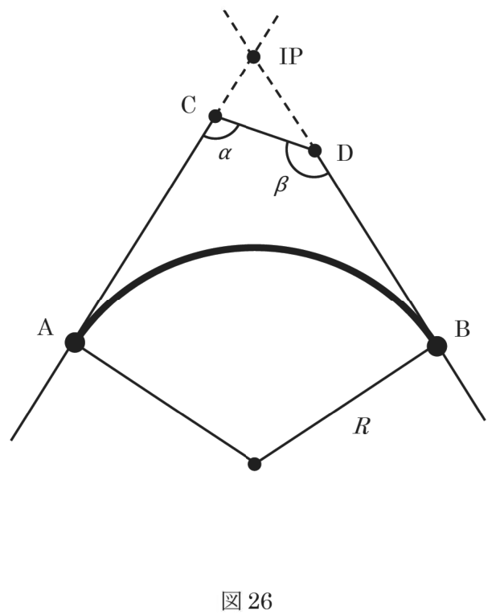
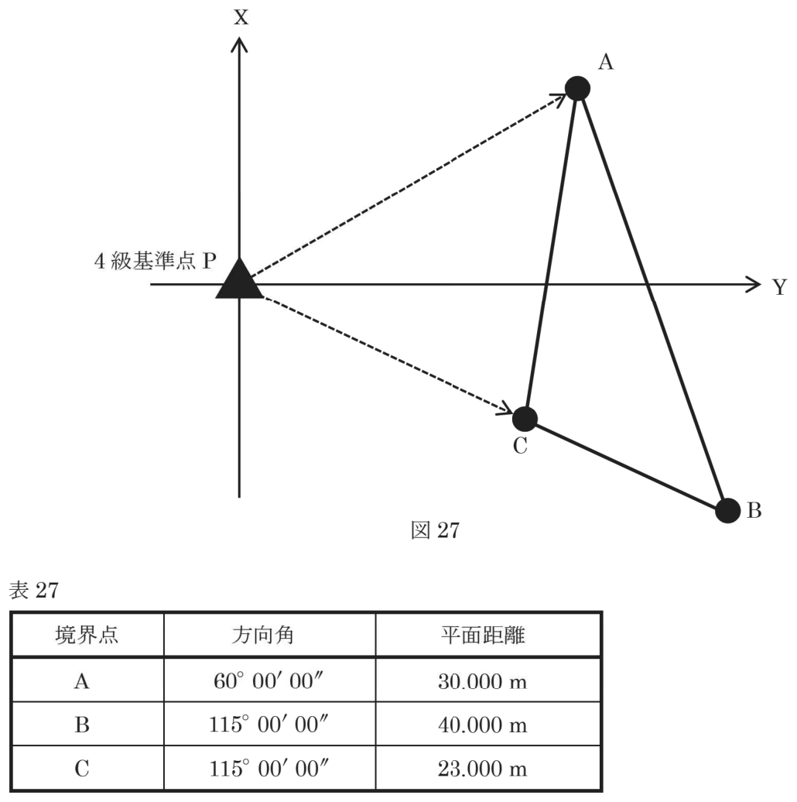

令和7年度（R7）計算問題
測量士補試験の計算問題 10 問。紙と鉛筆で解いてから「答えと解説」を開いてください。関数の値は試験の巻末の関数表を使います。
No.3数学
次の文は，測量の誤差について述べたものである。［ア］～［ウ］に入る語句及び数値の組合せとして最も適当なものはどれか。次の1～5の中から選べ。
なお，関数の値が必要な場合は，巻末の関数表を使用すること。
測定値に含まれる誤差のうち，［ア］は測量機器の特性や大気状態の影響などの原因から発生し，観測方法の工夫などが可能なものは対策することができる。一方，［イ］は，発生要因が明らかでないことから防ぐことができない。
このように測定値には誤差が含まれるため，真の値を求めることは不可能である。
しかし，ある長さや角度の測定値の一群が［イ］だけを含むと考えられる場合，理論的に最も確からしいと考えられる値を求めることは可能であり，こうして求めた値を最確値という。
トータルステーションを用いて，ある2地点間の距離を同じ条件で10回観測し，表3の結果を得た。［ア］が取り除かれているとすれば，2地点間の距離の最確値は［ウ］となる。

- ア=系統誤差／イ=偶然誤差／ウ=50.252 m
- ア=系統誤差／イ=偶然誤差／ウ=50.253 m
- ア=系統誤差／イ=偶然誤差／ウ=50.254 m
- ア=偶然誤差／イ=系統誤差／ウ=50.252 m
- ア=偶然誤差／イ=系統誤差／ウ=50.253 m
答えと解説
答え 2
ア・イ 機器のくせや気温など、原因が分かっていて、毎回同じように出てくるのが系統誤差。測り方の工夫などで対策できるものがあります。原因がはっきりせず、防げないのが偶然誤差です。
ウ 最確値は「いちばん本当らしい値」のことで、同じ条件で測った値どうしなら、ふつうの平均です。どの値も 50.25 までは同じなので、50.250 m を引いた残り（mm）で平均すると楽です。
差の平均 ＝ 30 ÷ 10 ＝ 3 mm
最確値 ＝ 50.250 ＋ 0.003 ＝ 50.253 m
No.6多角
表6は，基準点成果などの情報の抜粋である。［ア］及び［イ］に入るべき符号と［ウ］に入るべき数値の組合せとして最も適当なものはどれか。次の1～5の中から選べ。
ただし，平面直角座標系（平成14年国土交通省告示第9号）の11系における座標系原点の緯度及び経度は，次のとおりである。
北緯44° 00′ 00″.0000 東経140° 15′ 00″.0000

- ア=－／イ=＋／ウ=0.999901
- ア=＋／イ=－／ウ=0.999901
- ア=－／イ=＋／ウ=1.000001
- ア=＋／イ=－／ウ=1.000001
- ア=＋／イ=＋／ウ=1.000001
答えと解説
答え 1
ア・イ（符号） 平面直角座標は、座標系ごとの原点から北が X のプラス、東が Y のプラスです。緯度と経度を原点と比べます。
東経 140°22′ は原点の 140°15′ より東 → Y はプラス（イ ＝ ＋）
ウ（縮尺係数） 縮尺係数は「平面の上の距離 ÷ 地球の形（楕円体）に沿った距離」です。丸い地球を平らにのばすので場所で変わり、X 軸の上（Y ＝ 0）で 0.9999、X 軸から東西に離れるほど大きくなって、約 90 km 離れたところで 1 になります。
この点は Y ＝ 10,404 m で、X 軸から約 10 km しか離れていません。だから 0.9999 をほんの少し超えるだけです。
No.7多角
図7に示すとおり，公共測量における点A～Cを既知点とした基準点測量を実施し，新点（1）～（3）を設置した。水平角の観測値は表7のとおりである。新点（2）における既知点Aの方向角は幾らか。最も近いものを次の1～5の中から選べ。
ただし，既知点Cにおける既知点Bの方向角Tcは，318° 35′ 24″とする。また，地球の曲率は考えず，既知点及び新点は全て同じ水平面上にあるとみなすこととする。
なお，関数の値が必要な場合は，巻末の関数表を使用すること。また，図7は模式図であり，角度及び位置は正確とは限らない。

- 52° 33′ 00″
- 77° 36′ 24″
- 82° 24′ 36″
- 172° 24′ 36″
- 232° 33′ 00″
答えと解説
答え 1
方向角は、X 軸（北）から右回りに測った向きの角です。C から順に、辺の方向角を 1 つずつ求めていきます。C では、B の方向（方向角 Tc）から右回りに β₁ なので、足すだけです。
360° を超えたので 360° を引いて 50°06′36″
(3)・(1)・(2) で測った角 β は、来た方向（1 つ前の点の方向）から右回りに、次の点の方向まで測った角です。来た方向の方向角は、前の辺の方向角 ＋ 180° です。
③ (1)→(2) 60°01′12″ ＋ 180° ＋ 270°07′12″ ＝ 510°08′24″ → 150°08′24″
④ (2)→A 150°08′24″ ＋ 180° ＋ 82°24′36″ ＝ 412°33′00″ → 52°33′00″
No.9GNSS
公共測量の1級基準点測量において，電子基準点のみを既知点とする観測を行った。電子基準点Aを既知点とし新点Bの座標値を求めたい。新点BにGNSS測量機を設置して観測を行った後，表9の結果を用いてセミ・ダイナミック補正を適用し元期における新点BのY座標を求めるとき，次の文の［ア］～［ウ］に入る数値の組合せとして最も適当なものはどれか。次の1～5の中から選べ。
ただし，表9の①は平面直角座標系（平成14年国土交通省告示第9号）における座標値で，電子基準点A及び新点BのX座標及び楕円体高は同一とする。また，地殻変動補正パラメータから求めたX軸方向及び楕円体高の補正量は考慮しないものとする。
なお，関数の値が必要な場合は，巻末の関数表を使用すること。
表9の①及び③から，今期における電子基準点AのY座標は［ア］mである。表9の②から，今期における新点BのY座標は［イ］mである。今期から元期への変換は表9の③と逆向きの変換となる。したがって，新点Bの元期におけるY座標は［ウ］mとなる。

- ア=＋9,999.950／イ=－0.070／ウ=－0.090
- ア=＋9,999.950／イ=－0.070／ウ=－0.050
- ア=＋9,999.950／イ=－0.050／ウ=－0.070
- ア=＋10,000.050／イ=＋0.030／ウ=＋0.050
- ア=＋10,000.050／イ=＋0.030／ウ=＋0.010
答えと解説
答え 5
元期は座標の基準にしている時点、今期は観測した時点です。その間に地面が少し動いているので、A の座標をいったん今期に直してから観測値を足し、最後に B を元期へ戻します（この直しがセミ・ダイナミック補正）。基線ベクトルの Y 成分は、A から B まで Y がどれだけ変わるかです。
イ B の今期の Y ＝ 10,000.050 ＋ (−10,000.020) ＝ 0.030 m
ウ B の元期の Y ＝ 0.030 − 0.020 ＝ 0.010 m
表 9 の補正量は「元期 → 今期」の向きです。ウは今期から元期へ戻るので、足すのではなく引きます。
No.12水準
公共測量により，水準点Aから水準点Bまでの間で1級水準測量を実施し，表12に示す結果を得た。標尺補正を行った後の水準点A，B間の高低差は幾らか。最も近いものを次の1～5の中から選べ。
ただし，観測に使用した標尺の標尺改正数は20 ℃において－6.2 μm/m，膨張係数は＋0.6×10⁻⁶/℃とする。
なお，関数の値が必要な場合は，巻末の関数表を使用すること。

- ＋19.9996 m
- ＋19.9999 m
- ＋20.0000 m
- ＋20.0001 m
- ＋20.0003 m
答えと解説
答え 2
標尺（高さを読む物差し）の目盛りには、わずかな狂いがあります。標尺改正数は 1 m あたりの狂いを直す量（20 ℃ のとき）、膨張係数は温度 1 ℃ で 1 m あたりどれだけ伸びるかです。10⁻⁶ は 100 万分の 1 なので、1 m あたりでは 0.6 μm になります（1 μm ＝ 0.000001 m）。
1 m あたりの補正 ＝ −6.2 ＋ 0.6 × 2 ＝ −6.2 ＋ 1.2 ＝ −5.0 μm
高低差 20 m 分 ＝ −5.0 × 20 ＝ −100 μm ＝ −0.0001 m
補正後の高低差 ＝ 20.0000 − 0.0001 ＝ 19.9999 m
標尺で読んだのは高さなので、掛けるのは高低差の 20 m。距離の 1.80 km は使いません。
No.13地形
図13は，ある道路の縦断面を模式的に示したものである。この道路において，トータルステーション（以下「TS」という。）を用いた縮尺1/1,000の地形図作成を行うため，標高86.3 mの点AにTSを設置し点Bの観測を行ったところ，高低角－5°，斜距離72.0 mの結果が得られた。また，同じ道路上にある点Cの標高は123.8 mであった。
このとき，点B，点C間の水平距離を500.0 mとすると，点Bと点Cを結ぶ道路上の標高87.3 mの点Xは，この地形図上で点Bから何cmの地点か。最も近いものを次の1～5の中から選べ。
ただし，点Aと点Bを結ぶ道路及び点Bと点Cを結ぶ道路は，傾斜が一定でまっすぐな道路である。また，点A～C及び点Xはいずれも道路中心線上にあるものとする。
なお，関数の値が必要な場合は，巻末の関数表を使用すること。

- 8.3 cm
- 16.6 cm
- 25.0 cm
- 33.3 cm
- 41.6 cm
答えと解説
答え 1
まず B の標高。A から高低角 −5°（下向き）に斜距離 72.0 m なので、下がった高さは 72.0 × sin 5°。
B の標高 ＝ 86.3 − 6.28 ≒ 80.02 m
B から C まで一定の傾きで上るので、X までの水平距離は標高差の比で出ます。
＝ 500.0 × 7.28 ÷ 43.78 ≒ 83.1 m
縮尺 1/1,000 では、実際の 1 m が地図上の 1 mm なので、83.1 m は 83.1 mm ＝ 8.3 cm。
No.16写真
画面距離120 mm，撮像面の素子寸法6 μmのデジタル航空カメラを鉛直下に向けて，海面からの撮影高度3,000 mで数値写真の撮影を行ったところ，一枚の数値写真の主点付近に画面の短辺と平行に鉄道橋が写っていた。この鉄道橋は標高200 mの地点に水平に架けられており，数値写真上で長さを計測したところ1,000画素であった。
この鉄道橋の実際の長さは幾らか。最も近いものを次の1～5の中から選べ。
なお，関数の値が必要な場合は，巻末の関数表を使用すること。
- 130 m
- 140 m
- 150 m
- 160 m
- 170 m
答えと解説
答え 2
写真の縮尺は「画面距離 ÷ 写したものからカメラまでの高さ」です。橋は標高 200 m にあるので、高さは 3,000 − 200 ＝ 2,800 m。
実際の長さ ＝ 6 mm × 2,800 m ÷ 120 mm ＝ 6 × 2,800 ÷ 120 ＝ 140 m
No.17写真
画面距離100 mm，画面の大きさ12,000画素×11,000画素，撮像面での素子寸法6 μmのデジタル航空カメラを用いて鉛直空中写真を撮影した。撮影基準面での地上画素寸法を15 cmとした場合，標高0 mからの撮影高度は幾らか。最も近いものを次の1～5の中から選べ。
ただし，撮影基準面の標高は250 mとする。
なお，関数の値が必要な場合は，巻末の関数表を使用すること。
- 2,250 m
- 2,500 m
- 2,750 m
- 3,000 m
- 3,250 m
答えと解説
答え 3
地上画素寸法は、写真の 1 画素に写る地面の長さです。レンズをはさんだ上と下の三角形が同じ形なので、長さの比が等しくなります。
100 mm は 6 μm の何倍か ＝ 0.1 m ÷ 0.000006 m ＝ 100,000 ÷ 6 倍
基準面からの高さ ＝ 0.15 × 100,000 ÷ 6 ＝ 15,000 ÷ 6 ＝ 2,500 m
撮影基準面は標高 250 m にあるので、標高 0 m からの高さはその分だけ増えます。
No.26応用
図26は，川沿いの平たんな土地における，円曲線始点A，円曲線終点Bからなる円曲線の道路の建設計画を模式的に示したものである。交点IPの位置に川が流れており，杭を設置できないため，円曲線始点Aと交点IPを結ぶ接線上に補助点C，円曲線終点Bと交点IPを結ぶ接線上に補助点Dをそれぞれ設置し観測を行ったところ，α＝95°，β＝145°であった。
曲線半径R＝350 mとするとき，円曲線始点Aから円曲線終点Bまでの路線長は幾らか。最も近いものを次の1～5の中から選べ。
なお，円周率π＝3.14とし，関数の値が必要な場合は，巻末の関数表を使用すること。

- 672 m
- 702 m
- 733 m
- 763 m
- 794 m
答えと解説
答え 3
IP に杭を打てないので、三角形 C・IP・D の角から交角 I を出します。
D の内角 ＝ 180° − 145° ＝ 35°
交角 I ＝ 85° ＋ 35° ＝ 120°
交角は IP で道路の向きが変わる角で、三角形の IP の外角にあたるので、残り 2 つの内角の和です（IP の内角 60° を 180° から引いても同じ）。円曲線の中心角は交角に等しいので
No.27応用
図27のように，境界点A，B，Cを頂点とする三角形の土地の面積を算出するため，公共測量で設置された4級基準点Pから，トータルステーションを使用して境界点A，B，Cの測量を実施した。表27はその結果を示している。この土地の面積は幾らか。最も近いものを次の1～5の中から選べ。
ただし，図27のX及びYは平面直角座標系（平成14年国土交通省告示第9号）におけるX軸及びY軸の方向を示すものとする。
なお，関数の値が必要な場合は，巻末の関数表を使用すること。

- 128 m²
- 146 m²
- 198 m²
- 209 m²
- 215 m²
答えと解説
答え 4
B と C は P から同じ方向角 115° なので、P・C・B は一直線に並びます。三角形 ABC を、その直線の上の辺 CB を底辺、A からその直線までを高さとして考えます。
A の向きと直線の向きの差 ＝ 115° − 60° ＝ 55°
高さ ＝ 30.000 × sin 55° ＝ 30 × 0.81915